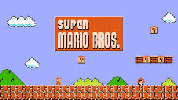

Super Mario Bros. is a platform game developed and published by Nintendo. The successor to the 1983 arcade game, Mario Bros., and the first in the Super Mario series of platformers, it was released in Japan in 1985 for the Famicom, and in North America and Europe for the Nintendo Entertainment System (NES) in 1985 and 1987 respectively. Players control Mario, or his brother Luigi in the multiplayer mode, as they travel the Mushroom Kingdom to rescue Princess Toadstool from Bowser. They must traverse side-scrolling stages while avoiding hazards such as enemies and pits with the aid of power-ups such as the Super Mushroom, Fire Flower, and Starman.
